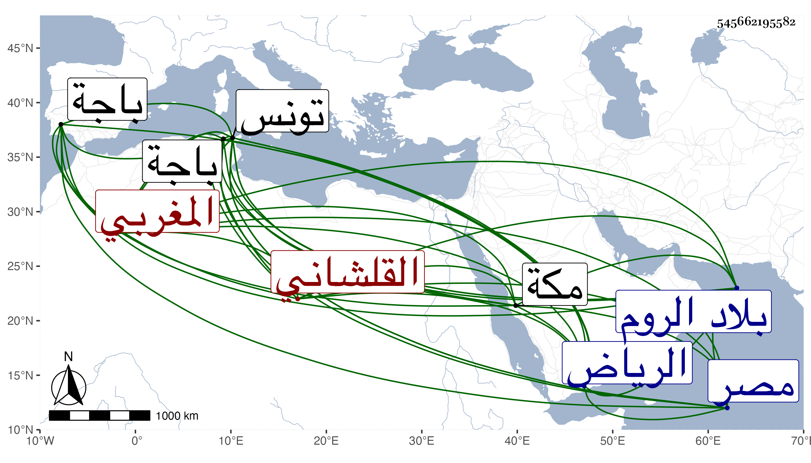

0902Sakhawi.DawLamic.ITO20230111-ara1.EIS1600.545662195582
Biography ID: 545662195582
583
حسين بن عمر بن محمد القلشاني المغربي أخو حسن الماضي وكانا توءمين وقاضي الجماعة محمد وهو أسن الثلاثة ، ممن شارك أخاه في الأخذ عن شيوخه وولي التدريس بمدرسة الرياض بتونس ، وبعد أخيه قضاء باجة ثم صرف عنها بالفقيه سعيد القفصي وليس بمحمود كقاضي الجماعة . مات مقتولا بأيدي الفرنج في ثاني عشر شوال سنة إحدى وتسعين قبل إكمال الستين لحمله رسالة من صاحب تونس لملك الروم وأخرى لملك مصر يشير فيهما بالصلح والكف فقتلوه قبل وصوله لهما ، وكان ذا صولة وإقدام على الملوك وتميز في الفقه وأصوله مع مزيد كرم وأنجب أحد الآخذين عني بمكة الفاضل شمس الدين محمد الآتي .
